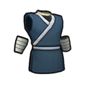

Uniforme do Sokka
Armadura leve · Tier 8 · Nível 25
Um uniforme tradicional da Tribo da Água, adaptado para climas mais quentes.
Atributos
Defesa
175
Vida
11
Economia
Valor
245.000
Tempo de fabricação
4h 40min
XP do comerciante
41.000
Trabalhadores: Alfaiate 21, Mestre 17
Receita


Marcos do projeto
7
Tempo de fabricação -25%
16
Valor +25%
30
-43 Couro
45
-11 Tecido
70
Chance de qualidade +1